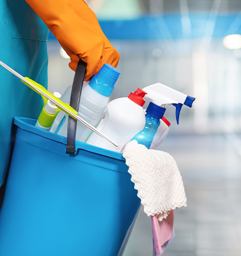

- Nettoyage de base : Comprend le dépoussiérage, le balayage, le lavage des sols, le nettoyage des surfaces et le vidage des poubelles.
- Nettoyage de la cuisine : Inclus le nettoyage des comptoirs, de l'évier, des appareils électroménagers extérieurs, de la table et des chaises, ainsi que le nettoyage des éclaboussures et des taches sur les surfaces.
- Nettoyage de la salle de bain : Comprend le nettoyage des toilettes, des lavabos, des baignoires, des douches, des miroirs, ainsi que le lavage des sols et le rangement des articles de toilette.
- Nettoyage des surfaces vitrées : Inclus le nettoyage des fenêtres, des miroirs et des portes vitrées pour assurer une visibilité maximale et un aspect propre et brillant.
- Nettoyage en profondeur : Comprend un nettoyage détaillé et approfondi de toutes les surfaces, y compris des éléments tels que le dépoussiérage des plinthes, le nettoyage des radiateurs, le lavage des portes et des encadrements, ainsi que le nettoyage des luminaires.
- Nettoyage des moquettes et des tapis : Inclus un nettoyage en profondeur pour éliminer la saleté, les taches et les allergènes, en utilisant des méthodes telles que l'extraction à la vapeur.
- Dépoussiérage des surfaces difficiles d'accès : Comprend le nettoyage des ventilateurs de plafond, des luminaires encastrés, des corniches, des dessus d'armoires et d'autres surfaces difficiles d'accès.
- Nettoyage des murs et des plafonds : Inclus un nettoyage approfondi pour éliminer les taches, les traces de doigts et la saleté, adapté à chaque type de surface.
- Élimination des débris : Inclus l'enlèvement et l'élimination des déchets de construction tels que les restes de matériaux et d'emballages.
- Nettoyage des surfaces : Comprend un nettoyage en profondeur pour éliminer la poussière, la saleté et les résidus de construction sur les murs, les sols et les surfaces.
- Nettoyage des fenêtres : Inclus le nettoyage des vitres pour éliminer les traces de colle et de peinture, garantissant une visibilité claire.
- Nettoyage des sols : Comprend le balayage, le lavage et le polissage des sols pour éliminer les résidus de plâtre, de ciment et de peinture.
- Nettoyage des sanitaires : Inclus le nettoyage des toilettes, des lavabos et des baignoires pour éliminer les résidus de construction et assurer la propreté.
